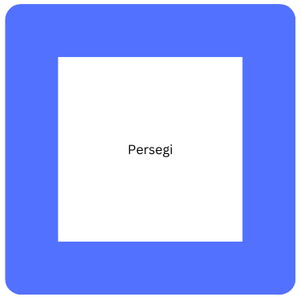
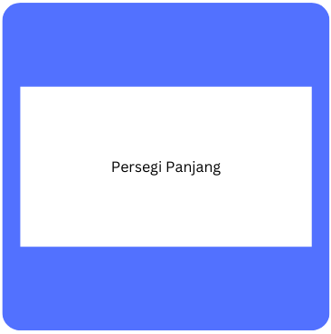
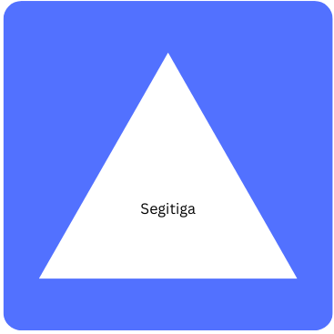
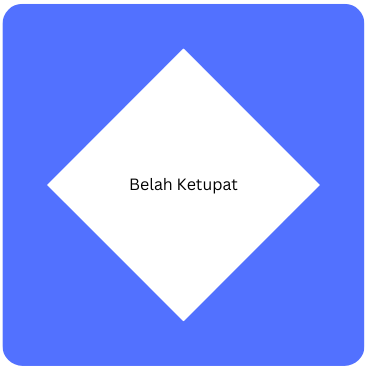
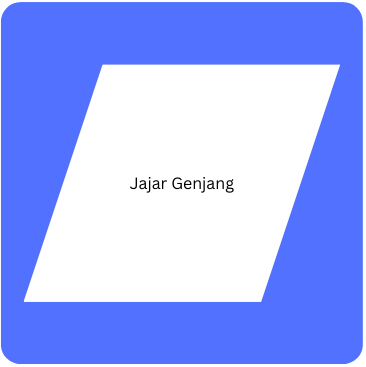
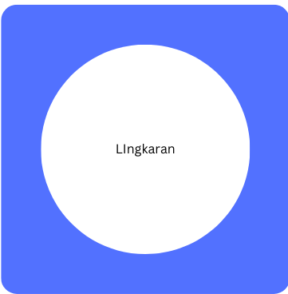
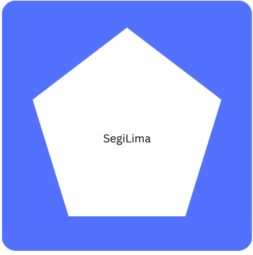
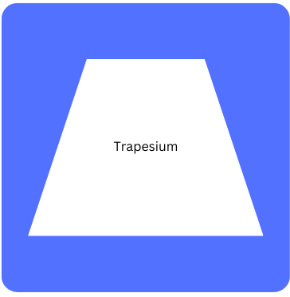

Bangun Datar
Apa Itu Bangun Datar ?
Bangun datar adalah bentuk geometri dua dimensi yang memiliki panjang dan lebar, tetapi tidak memiliki ketebalan. Sederhananya, bangun datar adalah gambar yang hanya bisa kita lihat pada permukaan datar, seperti kertas atau layar komputer.
Ciri - Ciri Bangun Datar:
- Dua dimensi : Hanya memiliki panjang dan lebar.
- Permukaan datar : Tidak memiliki volume atau ketebalan.
- Dibatasi oleh garis : Garis-garis lurus atau lengkung membatasi bentuk bangun datar.
Sifat - Sifat Bangun Datar:
- Sisi : Garis-garis yang membentuk batas bangun datar.
- Titik sudut : Titik pertemuan antara dua sisi.
- Diagonal : Garis yang menghubungkan dua titik sudut yang berhadapan (tidak berdekatan).
- Keliling : Panjang seluruh sisi yang membentuk bangun datar.
- Luas : Ukuran daerah yang dibatasi oleh sisi-sisi bangun datar.
- Simetri : Kemampuan suatu bangun untuk dibagi menjadi dua bagian yang identik.
Macam - Macam Bangun Datar
| No | Nama Bangun Datar | Bentuk Bangun Datar | Rumus Keliling | Rumus Luas | Catatan |
|---|---|---|---|---|---|
| 1 | Persegi |  | 4 x S | S x S | S = sisi |
| 2 | Persegi Panjang |  | 2 + (P x L) | P x L | P = panjang, L = lebar |
| 3 | Segitiga |  | a + b + c | 1/2 x a x t | a = alas, t = tinggi, b,c = sisi lainnya |
| 4 | Belah Ketupat |  | 4 x S | 1/2 x d1 x d2 | S = sisi, d1,d2 = diagonal |
| 5 | Jajar Genjang |  | 2 x (a+b) | a x t | a = alas, b = sisi miring, t = tinggi |
| 6 | Lingkaran |  | 2 x phi x r | phi x r x r | r = jari-jari, phi = 3.14 |
| 7 | Segi Lima |  | 5 x s | 1/4 x akar 5(5+2 x akar 5) x s x s | s = sisi |
| 8 | Trapesium |  | a + b + c + d | 1/2 x (a+b) x t | a = sisi sejajar atas, b = sisi sejajar bawah, c,d = sisi lainnya, t = tinggi |
Tentang Kami
Website ini dibuat untuk membantu Anda mempelajari bangun datar dengan mudah dan menyenangkan. Di sini, Anda akan menemukan berbagai macam bangun datar, mulai dari yang paling sederhana hingga yang lebih kompleks. Kami menyajikan informasi tentang nama, keliling, dan luas setiap bangun datar secara jelas dan ringkas, dilengkapi dengan gambar-gambar yang mudah dipahami.
Tujuan kami adalah menjadi sumber belajar yang andal bagi siswa, guru, atau siapa saja yang ingin memahami konsep-konsep dasar geometri.